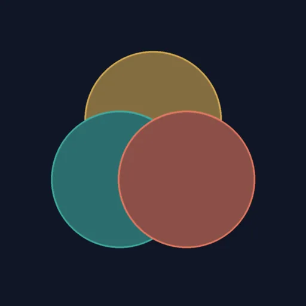
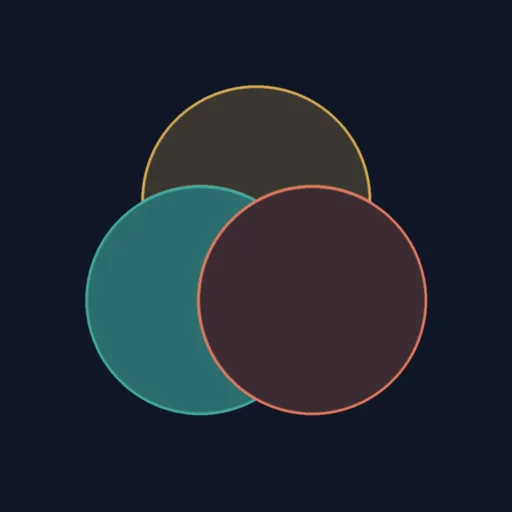
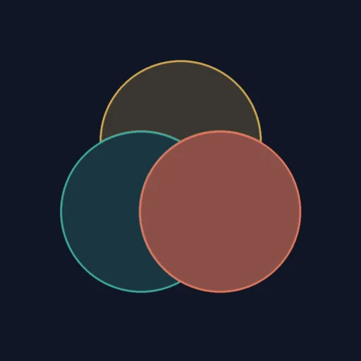

Wat ik leer en uitzoek, om naar te luisteren en op terug te vallen. Eerste reeks: zelfdeterminatietheorie, als basis voor praktijkonderzoek naar motivatie in coachgesprekken met leerlingen.



Naar de speler Literatuuronderzoek Bronnen